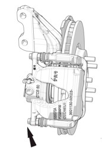
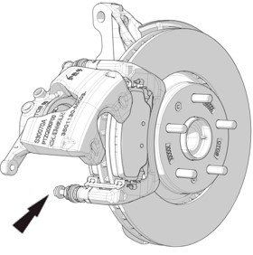
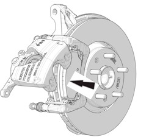

拆卸
1、拆卸轮胎。参考： 车轮和轮胎
2、拆卸前卡钳钳体。参考： 前制动钳
3、拆卸制动钳下轴销紧固螺栓后将制动钳向上转动，取下制动器摩擦块。


安装
1、使用活塞回顶工具，压缩制动分泵活塞。

2、安装制动器摩擦块。
摩擦块换新时须成对更换（即内摩擦块和外摩擦块同时换新）。
3、安装新的制动钳轴销固定螺栓，扭矩：31-38N.m。
4、用力踩制动踏板两次以上。
5、检查制动液位，必要时添加。
安装摩擦块必须严格执行以上操作，盘厚度，确保制动盘厚度合格。